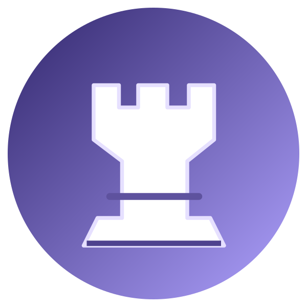
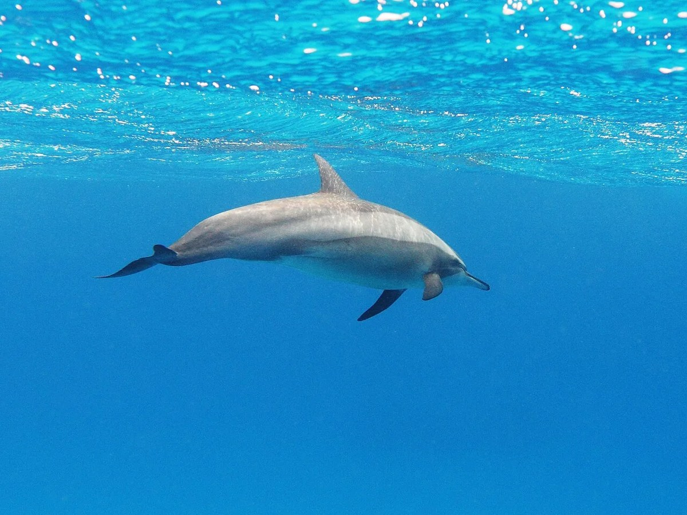

Diego — diagnostica
Verifica del browser Samsung. Nessuna impostazione viene cambiata.
Immagini locali: PNG, JPEG, WebP, SVG


Risultati caricamento in corso.
La prova definitiva di funzionamento offline richiede HTTPS attendibile, cache completa, disconnessione Wi-Fi e riavvio reale della Flip. Un test su HTTP locale non prova il supporto offline.